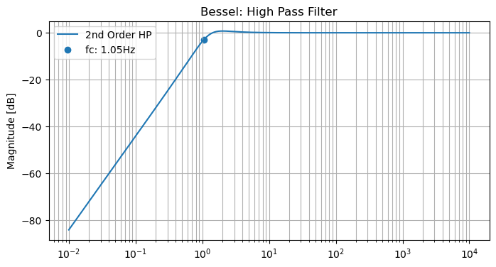
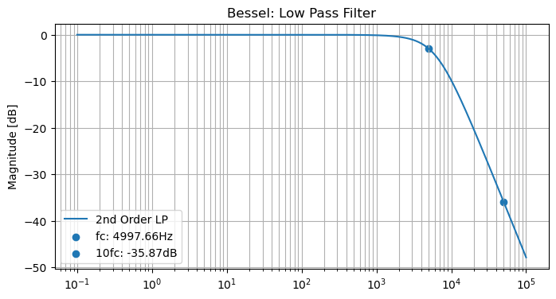
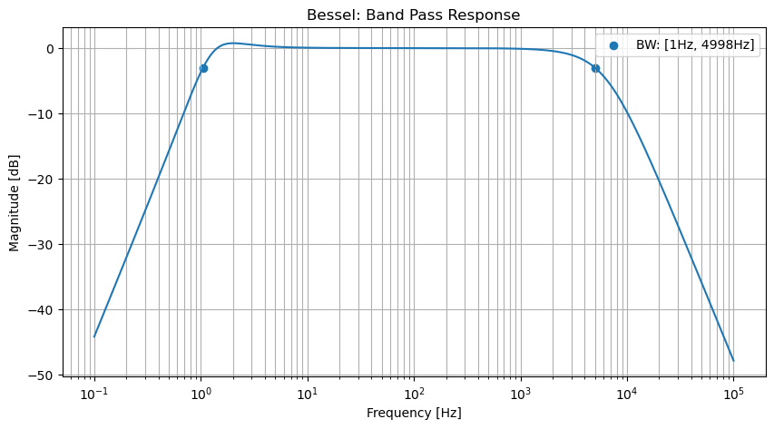

Filter Design
Contents
Filter Design#
Reference: Active Low-Pass Filter Design
Second Order Filter
\[\begin{align*}
H(s) &= \dfrac{\omega_0^2}{s^2 + 2\zeta \omega_0 s + \omega_0^2} \\[1em]
\end{align*}\]
Quality Factor
\[\begin{align*}
Q &= \dfrac{\omega_0}{2\zeta \omega_0}
\end{align*}\]
A higher value of Q results in more peaking in the frequency response and more ringing in the step response
Motivation#
Bandwidth of the signal is fixed by the application and sets the minimum circuit bandwidth. So how do we improve?
Goal in designing filters is to maximize SNR and minimize the noise bandwith
Active filters improve SNR performance over passive filters by minimizing attenuation in the pass band and providing steep roll-off
Butterworth vs Bessel vs Chebyshev#
Fig. 18 Filter Performance#
# Imports
import numpy as np
import pandas as pd
import sympy as sp
from sympy.utilities.lambdify import lambdify
import matplotlib.pyplot as plt
import matplotlib
from IPython.core.interactiveshell import InteractiveShell
InteractiveShell.ast_node_interactivity = "all"
from matplotlib.ticker import LogLocator
High Pass#
Fig. 19 Sallen Key Filter: High Pass#
\[\begin{align*}
W_0 &= \frac{1}{\tau \sqrt{mn}} \\[1em]
W_c &= \frac{W_0}{C_n} \\[1em]
Q &= \frac{\sqrt{mn}}{1+n} \\[1em]
m &= \frac{R_1}{R_2} \\[1em]
n &= \frac{C_1}{C_2} \\[1em]
\tau &= R_2 C_2
\end{align*}\]
fname = 'bessel'
fc1 = 1
# Future work:
# provide flexibility to pass m or n values
# provide flexibility to pass capacitor or resistor values
def HPfilter(fname='butterworth',fc=1,nVar=2,C2Var=1e-6):
# Determines high pass filter component values
# Parameters:
# filter name,
# n: ratio of capacitor values (C1/C2)
# C2: component value of C2
s,m,n,C1,C2,R1,R2,Q,tau,W0 = sp.symbols('s,m,n,C1,C2,R1,R2,Q,tau,omega0')
systemHP = sp.Matrix([
[W0 - 1/(tau*sp.sqrt(m*n))],
[Q - sp.sqrt(m*n)/(1+m)],
[m - R1/R2],
[n - C1/C2],
[tau - R2*C2]
])
Cn = 1 # Table (Butterworth / Bessel / Chebyshev)
Qvar = 1 # Table (Butterworth / Bessel / Chebyshev)
if fname == 'butterworth':
Cn = 1
Qvar = 0.7071
if fname == 'bessel':
Cn = 1.2736
Qvar = 0.5773
if fname == 'chebyshev3db':
Cn = 0.8414
Qvar = 1.3049
myVals = {
W0:2*sp.pi*fc*Cn,
Q:Qvar,
n:nVar, # Chosen Ratio
C2:C2Var # Chosen Value
}
systemHP = systemHP.subs(myVals)
eq = sp.solve(systemHP)
return eq
C2Var=1e-6
eq = HPfilter(fname=fname,fc=fc1,nVar=2,C2Var=C2Var)
tau = sp.symbols('tau')
taus = []
sol = {}
if eq:
sol = eq[0]
if len(eq)>1:
taus = [dct[tau] for dct in eq]
sol = eq[taus.index(min(taus))]
eq
[{R1: 45733.3292215825,
R2: 170730.593180212,
m: 0.267868390601263,
tau: 0.170730593180212,
C1: 2.00000000000000e-6},
{R1: 170730.593180212,
R2: 45733.3292215825,
m: 3.73317657135796,
tau: 0.0457333292215825,
C1: 2.00000000000000e-6}]
s,C1,C2,R1,R2 = sp.symbols('s,C1,C2,R1,R2')
f = np.logspace(-2, 4, 10000)
w = 2*np.pi*f
num = 1*s**2
a = 1
b = (1/R1)*(C1+C2)/(C1*C2)
c = 1/(R1*R2*C1*C2)
den = a*s**2 + b*s + c
components = {
C1:sol[C1], # Fill in from calc.
C2:C2Var, # Fill in from calc.
R1:sol[R1], # Fill in from calc.
R2:sol[R2] # Fill in from calc.
}
H = sp.Matrix([num/den])
H1 = H = H.subs(components)
H = lambdify(s,H,modules='numpy')
H = H(1j*w)
H = H[0][0]
components
{C1: 2.00000000000000e-6,
C2: 1e-06,
R1: 170730.593180212,
R2: 45733.3292215825}
fig, ax = plt.subplots(figsize=(8,4))
x1 = np.where(20*np.log10(abs(H))<=-3)[0][-1]
label1 = "fc: {:.2f}Hz".format(f[x1])
ax.set_title(f'{fname.title()}: High Pass Filter')
ax.semilogx(f, 20*np.log10(abs(H)),label=r'2nd Order HP')
ax.scatter(f[x1],20*np.log10(abs(H[x1])),label=label1,color='tab:blue')
ax.set_ylabel('Magnitude [dB]')
ax.grid(which='both', axis='both')
ax.legend()
plt.show();

Fig. 20 Sallen Key Filter : Low Pass#
\[\begin{align*}
W_0 &= \frac{1}{\tau \sqrt{mn}} \\[1em]
W_c &= \frac{W_0}{C_n} \\[1em]
Q &= \frac{\sqrt{mn}}{1+n} \\[1em]
m &= \frac{R_1}{R_2} \\[1em]
n &= \frac{C_2}{C_1} \\[1em]
\tau &= R_2 C_1
\end{align*}\]
Low Pass#
fname = 'bessel'
fc2 = 5e3
# Future work:
# provide flexibility to pass m or n values
# provide flexibility to pass capacitor or resistor values
def LPfilter(fname='butterworth',fc=5e3,mVar=1,C2Var=1e-9):
# Determines low pass filter component values
# Parameters:
# filter name,
# m: ratio of capacitor values (R1/R2)
# C2: component value of C2
s,m,n,C1,C2,R1,R2,Q,tau,W0 = sp.symbols('s,m,n,C1,C2,R1,R2,Q,tau,omega0')
systemLP = sp.Matrix([
[W0 - 1/(tau*sp.sqrt(m*n))],
[Q - sp.sqrt(m*n)/(1+m)],
[m - R1/R2],
[n - C2/C1],
[tau - R2*C1]
])
Cn = 1 # Table (Butterworth / Bessel / Chebyshev)
Qvar = 1 # Table (Butterworth / Bessel / Chebyshev)
if fname == 'butterworth':
Cn = 1
Qvar = 0.7071
if fname == 'bessel':
Cn = 1.2736
Qvar = 0.5773
if fname == 'chebyshev3db':
Cn = 0.8414
Qvar = 1.3049
myVals = {
W0:2*sp.pi*fc*Cn,
Q:0.5773, # Table (Butterworth / Bessel / Chebyshev)
m:mVar, # Chosen Ratio
C2:C2Var # Chosen Value
}
systemLP = systemLP.subs(myVals)
eq = sp.solve(systemLP)
return eq
C2Var=1e-9
eq = LPfilter(fname=fname,fc=fc2,mVar=1,C2Var=C2Var)
tau = sp.symbols('tau')
taus = []
sol = {}
if eq:
sol = eq[0]
if len(eq)>1:
taus = [dct[tau] for dct in eq]
sol = eq[taus.index(min(taus))]
eq
[{C1: 7.50130620244903e-10,
R1: 28856.8306051982,
R2: 28856.8306051982,
n: 1.33310116000000,
tau: 2.16463922401795e-5}]
s,C1,C2,R1,R2 = sp.symbols('s,C1,C2,R1,R2')
f = np.logspace(-1, 5, 100000)
w = 2*np.pi*f
num = 1/(R1*R2*C1*C2)
a = 1
b = (1/C2)*(R1+R2)/(R1*R2)
c = 1/(R1*R2*C1*C2)
den = a*s**2 + b*s + c
components = {
C1:sol[C1], # Fill in from calc.
C2:C2Var, # Fill in from calc.
R1:sol[R1], # Fill in from calc.
R2:sol[R2] # Fill in from calc.
}
H = sp.Matrix([num/den])
H2 = H = H.subs(components)
H = lambdify(s,H,modules='numpy')
H = H(1j*w)
H = H[0][0]
components
{C1: 7.50130620244903e-10,
C2: 1e-09,
R1: 28856.8306051982,
R2: 28856.8306051982}
fig, ax = plt.subplots(figsize=(8,4))
x1 = np.where(20*np.log10(abs(H))<=-3)[0][0]
label1 = "fc: {:.2f}Hz".format(f[x1])
x2 = np.where(f>=50000)[0][0]
label2 = "{:.2f}dB".format(20*np.log10(abs(H[x2])))
label2 = f"10fc: {label2}"
ax.set_title(f'{fname.title()}: Low Pass Filter')
ax.semilogx(f, 20*np.log10(abs(H)),label=r'2nd Order LP')
ax.scatter(f[x1],20*np.log10(abs(H[x1])),label=label1,color='tab:blue')
ax.scatter(f[x2],20*np.log10(abs(H[x2])),label=label2,color='tab:blue')
ax.set_ylabel('Magnitude [dB]')
ax.grid(which='both', axis='both')
ax.legend()
plt.show();

Band Pass#
f = np.logspace(-1, 5, 100000)
w = 2*np.pi*f
H = H1 * H2
H = lambdify(s,H,modules='numpy')
H = H(1j*w)
H = H[0][0]
fig, ax = plt.subplots(figsize=(10,5))
x0 = np.where(20*np.log10(abs(H[0:20000]))<=-3)[0][-1]
label0 = "{:.0f}Hz".format(f[x0])
x1 = 20000+np.where(20*np.log10(abs(H[20000:]))<=-3)[0][0]
label1 = "{:.0f}Hz".format(f[x1])
label1 = f"BW: [{label0}, {label1}]"
ax.set_title(f'{fname.title()}: Band Pass Response')
ax.semilogx(f, 20*np.log10(abs(H)),color='tab:blue') # label=r'$4^{th}$ Order Sallen-Key BP')
ax.scatter(f[x0],20*np.log10(abs(H[x0])),color='tab:blue')
ax.scatter(f[x1],20*np.log10(abs(H[x1])),label=label1,color='tab:blue')
ax.set_ylabel('Magnitude [dB]')
ax.set_xlabel('Frequency [Hz]')
ax.grid(which='both', axis='both')
ax.legend()
plt.show();

Filter Scaling Tables#
Fig. 21 Butterworth#
Fig. 22 Bessel#
Fig. 23 Chebyshev 1dB#
Fig. 24 Chebyshev 3dB#